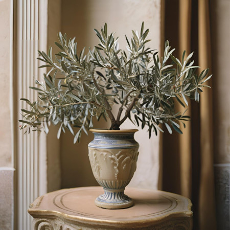
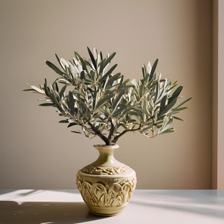
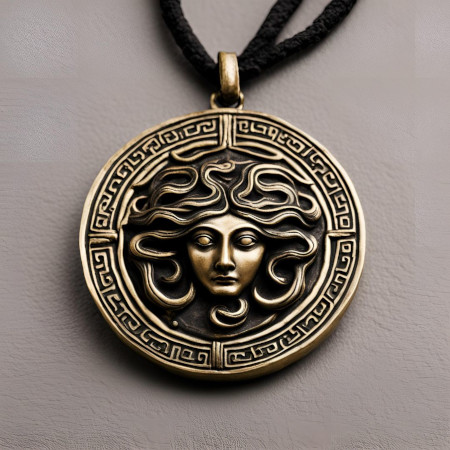

Planner da Atena
Um caderno de anotações e planejamento com capa em relevo. Inclui páginas para brainstorming, planejamento estratégico e anotações pessoais.
- Seções para diferentes tipos de planejamento.
- Papel de alta qualidade para uma escrita suave.
- Inclui dicas e técnicas de gestão e planejamento.
Isso tudo além de ter uma parte que explora técnicas de estratégia e inovação, com base nos princípios da deusa da sabedoria; para que você possa estar sempre inspirado.
E ainda tem mais!
Na compra de dois planners você pode escolher um Brinde!
Oliveira da Prosperidade
 Uma pequena oliveira em um vaso ornamentado, simbolizando a paz, a prosperidade e a proteção. Ideal para ambientes de trabalho ou casas.
(Inclui um manual de cuidados para garantir o crescimento da planta)
Amuleto da proteção
Um elegante amuleto ou medalhão com o símbolo da cabeça da Medusa, conhecido por representar proteção e sabedoria. Feito de materiais preciosos, é uma peça de joalheria que também serve como talismã.
| m.safira@aluno.ifsp.edu.br |

|
m.safira@aluno |
© Todos os direitos reservados-2024